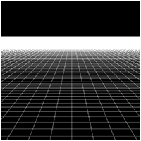
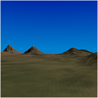
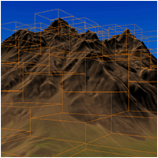
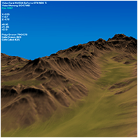
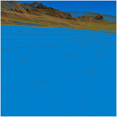
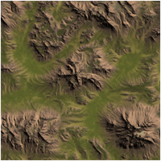
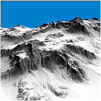
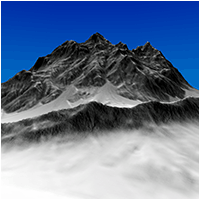

DirectX 11 Terrain Tutorials - Series 2

 |
Tutorial 1: Grid and Camera Movement |
 |
Tutorial 2: Bitmap Height Maps |
 |
Tutorial 3: Terrain Texturing |
 |
Tutorial 4: Terrain Lighting |
 |
Tutorial 5: Color Mapped Terrain |
 |
Tutorial 6: Terrain Normal Mapping |
 |
Tutorial 7: Sky Domes |
 |
Tutorial 8: RAW Height Maps |
 |
Tutorial 9: Terrain Cells |
 |
Tutorial 10: Terrain Cell Culling |
 |
Tutorial 11: Height Based Movement |
 |
Tutorial 12: Terrain Mini-Maps |
 |
Tutorial 13: Procedural Terrain Texturing |
 |
Tutorial 14: Distance Normal Mapping |